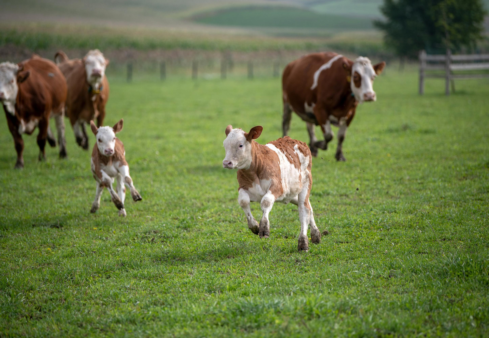
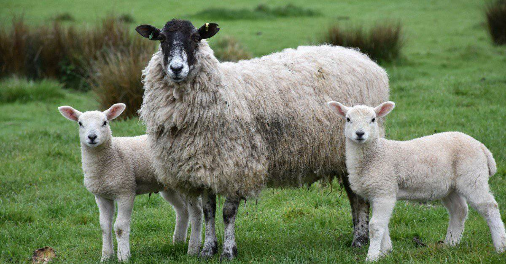
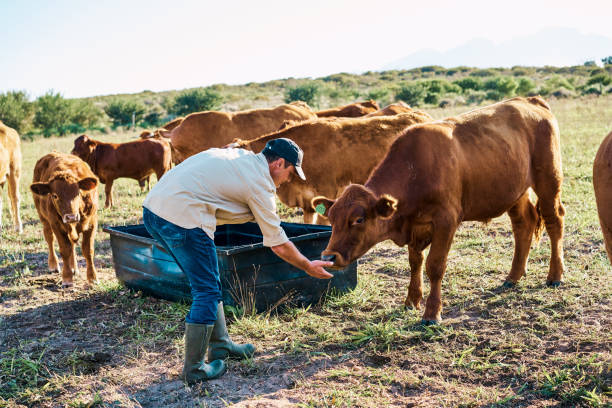
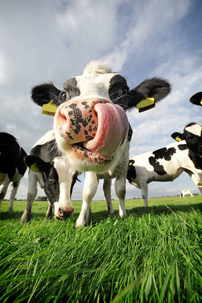
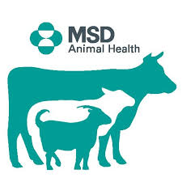
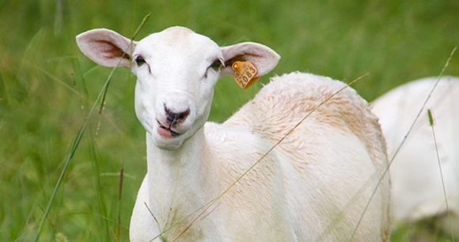

NMSU Extension: Gestation Table
Die is net n webtuiste met goeie inligting vir beeste wat sal handig wees om te weet as n boer met beeste werk
Krediete
Die blad is gebruik as n kolleksie van eksterne inligting ek gebruik het om die webtuiste te maak en krediet aan beelde te gee om nie perongeluk POPIA wet of ander wet ek nie van weet oortree nie

Elke item is ’n skakel met ’n blok waar jy kan skryf wat jy daaruit gebruik het.




